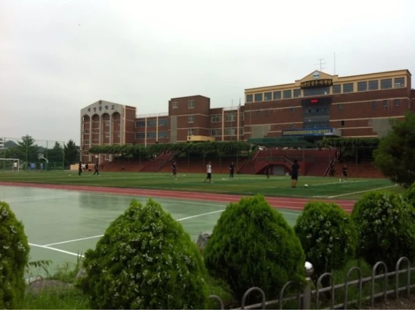

학교 소개

학교 사진이 준비되지 않았습니다. 아래 소개를 먼저 읽어 주세요.
계양중학교는 학생들이 다양한 교육 활동과 학교생활을 할 수 있는 학교입니다.
주요 기능
1. 계양중학교 소개 보기
2. 학교 이미지 보기
3. 학교생활 의견 등록하고 공감하기
이용 방법
- 상단 메뉴에서 학교 소개와 이미지를 확인합니다.
- 학교생활에 관한 의견을 입력하고 등록합니다.
- 의견 게시판에서 공감하는 의견의 공감 버튼을 누릅니다.
의견 작성
학교생활에서 바라는 점을 5~100자로 적어 주세요. 이름이나 연락처는 적지 마세요.
의견 게시판으로 이동의견 게시판
테스트용 게시판입니다. 모든 게시물은 저장되지 않으며 새로고침 시 초기화 됩니다~ ^^